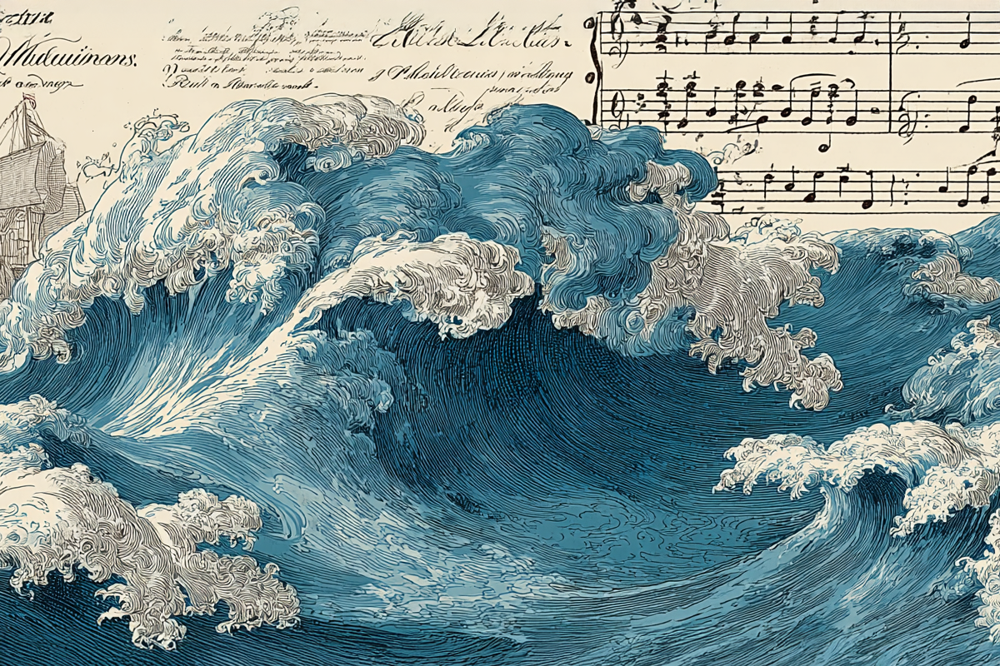
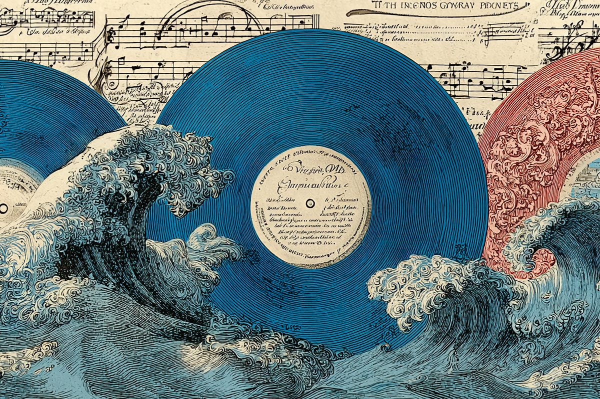

¿Cuál será la banda sonora de tu 2025?
Estos son los álbumes más esperados de lo que queda del año
Estos son los álbumes más esperados de lo que queda del año

El 2025 se ha pasado volando. Ya vamos por la mitad del año y no podemos negar que estos meses se nos fueron como un guiño. Sin embargo, todavía queda año, y con ello, varios álbumes que nos morimos por escuchar. Por ello, te dejamos algunos de los lanzamientos musicales más esperados de lo que queda de este 2025.
Kesha: Años han pasado desde que la queen del pop de los 2010 nos hacía bailar a todos con un estilo colorido, atrevido e histriónico. A pesar de que Kesha ya había lanzado un trabajo el 2023, Period, su próximo álbum, es el primero como artista independiente después de su salida de RCA Records y Kemosabe Label, dirigida por el productor Dr. Luke, a quien la artista había acusado de malos tratos y abuso sexual.
Los más nostálgicos ya están contando los días. "Period" está programado para ser liberado el próximo 4 de julio.

Jonas Brothers: Seguimos fuerte con el factor nostalgia. El recordado trío de hermanos de Disney, Jonas Brothers, están ad portas de lanzar su séptimo álbum de estudio titulado “Greetings from your Hometown”.
Según lo que el grupo publicó en sus redes sociales, los chicos volvieron a su natal New Jersey para reencontrarse con sus inicios y con sus recuerdos de infancia. Fue allí donde hicieron las imágenes que serán parte de este nuevo trabajo discográfico y desde donde también tomaron las influencias para desarrollar el sonido que le dará vida a este álbum.
Estamos esperando la novedad para el próximo 8 de agosto.
Ethel Cain: “Willoughby Tucker, I Will Always Love You” es el título del próximo álbum de Ethel Cain, quien no ha descansado para nada en lo que va del año.
Según el medio de comunicación musical Pitchfork, esta nueva entrega funcionaría como una suerte de precuela de su disco “Preachers’ Daughter” (2002), trabajo que fue sumamente alabado por la crítica y que la instaló algo más cerca del ojo del público.
Como dato aparte, la artista ya había lanzado “Perverts”, un EP ambiental en enero de este año, el que también tuvo la aprobación de los expertos.
Este nuevo álbum también será liberado el próximo 8 de agosto y se viene con una extensa gira bajo el brazo, con la cual estará visitando numerosas ciudades de Norteamérica y Europa.
Sabrina Carpenter: Si hablamos de la nueva realeza del pop, es innegable que una de sus principales princesas es Sabrina Carpenter.
En medio de varias controversias debido a las implicancias de la portada de este nuevo álbum, Carpenter no baja las expectativas de sus fans y del público general después de un meteórico ascenso en las listas musicales (y sin considerar que este año se llevó su primer Grammy). “Man’s Best Friend” es el título del sucesor de su exitoso álbum “Short n’ Sweet” (2024).
¿Qué podemos esperar de esta nueva entrega? Nos podemos hacer un poco a la idea con el single “Manchild”, lanzado como antesala de este nuevo trabajo, donde la cantante continua por el camino que tan bien le ha tratado: uno picarón, juguetón, con una estética “inocente” y con un pop de ritmos entretenidos y voces suaves. Guarden la fecha: 29 de agosto.
Wolf Alice: ¿Te suena Wolf Alice? Quizás no, pero aquí vengo a recomendar a esta banda, que si bien no se encuentra bajo el ojo del mainstream, sí tienen un trabajo que es bien esperado entre los fanáticos del rock alternativo y del indie.
Pequeña intro: Wolf Alice es un grupo que tuvo sus inicios el 2010 como dúo, pero que dos años después se transformó en banda, logrando un tremendo éxito sobre todo en las listas del Reino Unido, jugando tranquilos en territorio nacional (ellos son londinenses). Este éxito fue el reflejo de unos trabajos discográficos vibrantes, como lo fueron “My Love is Cool” (2015), “Visions of Life” (2017) y “Blue Weekend” (2021), todos con un gran recibimiento del público y la crítica.
Ahora, la banda vuelve tras largos cuatro años de ausencia con “The Clearing”, álbum que será lanzado también el 29 de agosto y al que ya podemos dar una primera oída gracias a la liberación de su single “Bloom Baby Bloom”.

Ed Sheeran: El pelirrojo favorito del pop y de las baladas coreables (y de los matrimonios) se aproxima raudo con su nuevo material musical.
Ed Sheeran debe ser uno de los grandes protegidos de los que escuchan siempre radio o lo que se encuentre arriba en las listas: es que su llegada con el público general, y de todas las edades, es innegable (y sus casi 97 millones de oyentes mensuales en Spotify lo confirman). “Play” es el título de su octavo álbum de estudio, el que será lanzado el próximo 12 de septiembre y que ya cuenta con tres canciones disponibles en todas las plataformas musicales: “Azizam”, “Old Phone” y “Sapphire”.
Se espera que esta nueva entrega sea el primero de cinco álbumes con una temática diferente a lo que ya estamos acostumbrados (para saber de qué hablo, pueden darle un vistazo a los nombres de sus álbumes pasados). Este LP contará con 13 canciones, 15 para su formato Deluxe en CD y con 16 en su formato Deluxe en vinilo.
Sabemos que estos son solo algunos de los muchos artistas que figuran en la parrilla musical del 2025 y que varios se nos quedaron en el tintero. ¿Tienes algún grupo o artista favorito que está planeando su regreso en lo que queda del año? ¿Algún trabajo musical que te haya dejado maravillado en esta primera mitad del 2025?
 Cultura
CulturaSé que suena raro hablar de calor extremo mientras en Chile todos están buscando la parka más gruesa del clóset.
 Cultura
CulturaEl hecho de que estemos entrando al mes de julio no se puede creer. Pero lo que tampoco se puede creer es la cantidad de artistas que han…
 Cultura
CulturaCuando hablamos de trabajos clásicos de la música chilena, siempre se nombran los discos de Violeta Parra, Víctor Jara, Los Jaivas o…